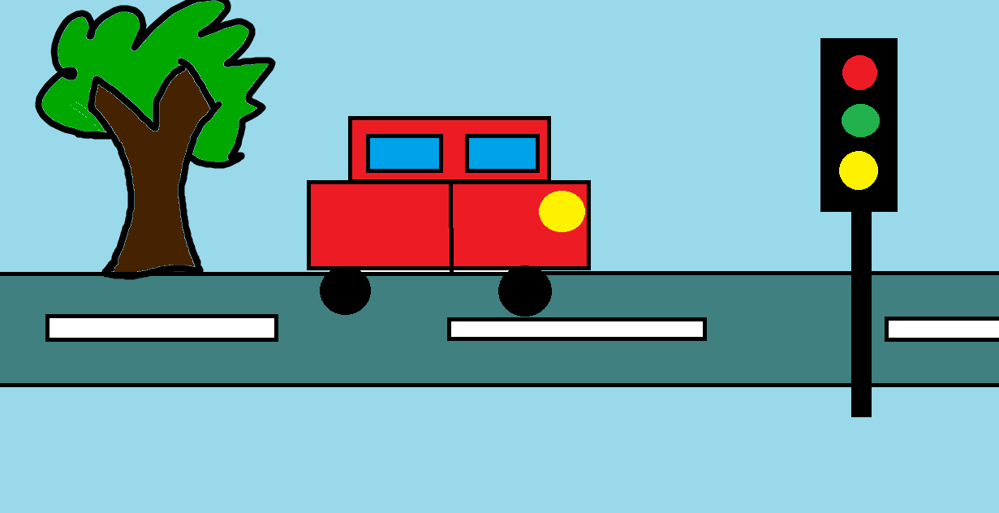

Name = Syed Numair Haider Hashmi
Roll no = 20-NTU-CS-1176
Section = Morning
Subject = Web Technologies
Teacher = Sir Shehbaz Sahi Sahib
Assignment no 1
- BSIT
- Information Technology
- BSCS
- Computer Science

Numair Haider Hashmi
- Shahid Afridi
- Cristiano Ronaldo
- john Cena
- sem 3.75 GPA
- sem 3.37 GPA
- sem 3.76 GPA
- sem 3.02 GPA
This is the Assignmentof roll no 1176 of BSIT 5th semester
The subject is thought by Sir Shebaz Sahi
Facebook
NTU
Numair Haider Hashmi
Umair Haider Hashmi
Usage of citeTag
Usage of Code Tag
Numair Haider
HTML is the standard markup language for creating web pages.
This is Numair's Assignment
BSIT is the most popular Degree of this uni
NTU Stands for National textile university
this is the Assignment of Roll no 1176 today.
Quaid Said Work, Work and Work
National
Cut this Sentence
Use of samp tag
Small tag make text extra small
Span is much like dive but its a inline element
this is important content
This text contains subscript text.
This text contains superscript text.
I have a date on .
This is some important text.
h is the vertical height.
Ntu is a university that offersBSITin pakistan.